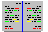

Previous
Next
TOC
 Erg‰nzendes
SCSI Hostadapter der Fa. Maxon
Probleme mit dem ROMport
Generelles zu H&N-Produkten (Aixit)
Adaptersockel fÅE Megabit-EPROMs
1MB Eprom oder warum passt genau dieses nicht?
Photo CD Dateiformat und Physikalische Daten einer CD
ASCII Tabelle (0-127)
Das STTrans Kabel
SCSI ID Schalter aussen am Geh‰use montiert
Die Umrechnung AWG <-> mm^2
Die Kennzeichnung von Widerst‰nden
Die Kennzeichnung von Kondensatoren
Die Probleme beim Betrieb von IDE-Festplatten
Der Drucker will nicht drucken
Reset-Taster am Towergeh‰use - wo anschliessen?
Ein geeigneter DurchgangsprÅEer
Kontakte und Ihre Belastbarkeit
Telekommunikation
Die ADO/VDO Dose der Telekom
Die AWADO Dose der Telekom
Die TAE Dose der Telekom
Spezial
Chili Rezepte
;-)
Die PlatinenÅEersicht
Die IC ÅEersicht
Eine Toshiba CD ROM Hilfe
Die Logos von Firmen
Die Blockschaltbilder der Computer
Der Lebenslauf von Atari
Der Asus SC200 SCSI Hostadapter
‹ber die IECEE und IEC Geschichte
weiterbl‰ttern